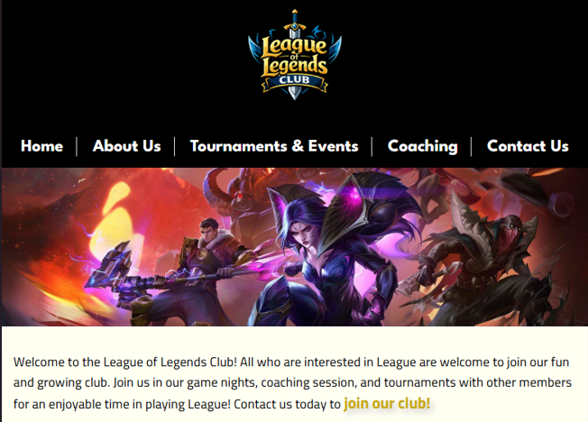
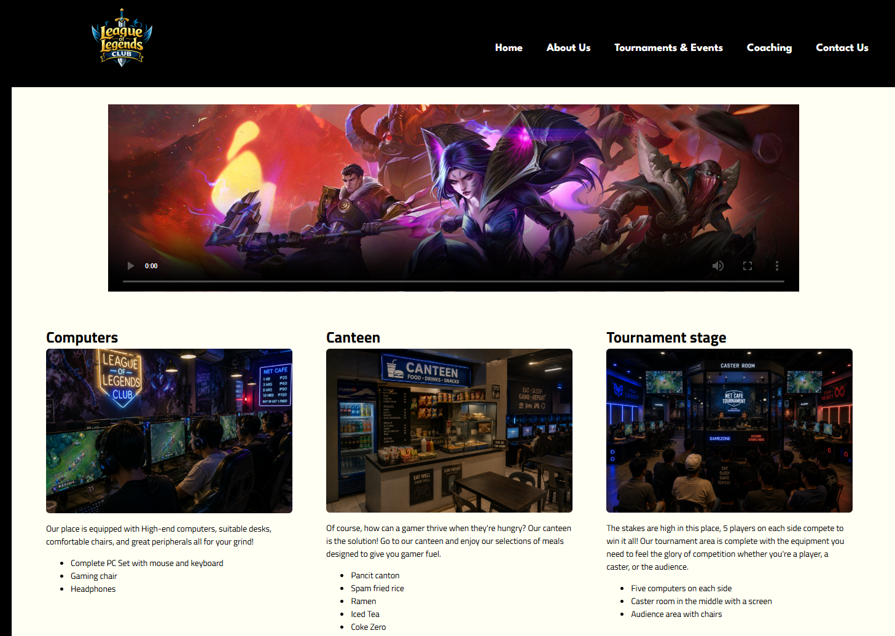
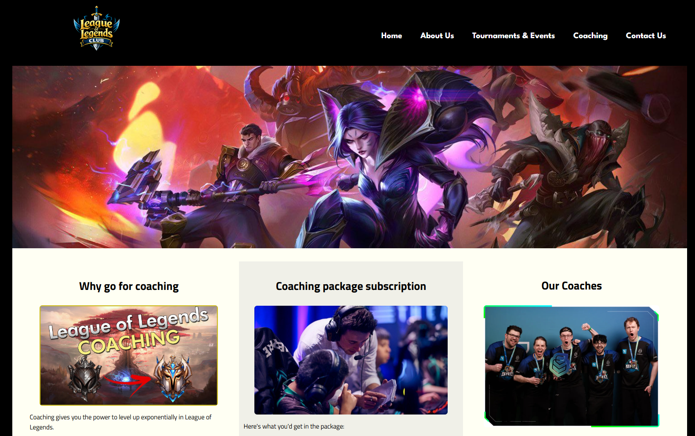
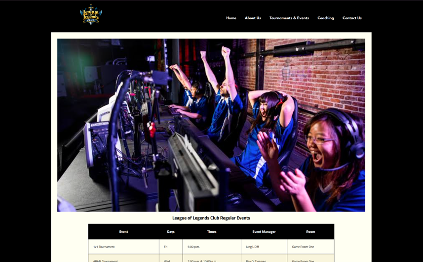

Case Study
This website is for a gaming club designed to be responsive and user-friendly. It features various interactive elements and appropriate forms and contact information to draw people to the club.
See the whole project on GitHub!
Bautista, Ivan Michael M.
Overview:
This website is made for a class in WEBCS. The case study is purely fictional and focuses on the design and development process. It's made for a fictional client called the League of Legend Club, a gaming club.
Client:
The client is a fictional club about league of legends that aims to provide a platform for similar gamers to connect, share experiences, and participate in events in the building.
Specifications:
The website must be responsive and user-friendly, with various interactive elements and appropriate forms and contact information.
Output:



The final output is a responsive and user-friendly website that meets the gaming club's requirements and provides an interactive experience and supplies them with information and channels to reach the club itself.
Takeaways:
The website development process gave me lessons in reponsive design, user experience, and making sure the visitors feel comfortable and engaged. I also learned the importance of fundamental information requirements, no matter how well-designed the interface is. If content and information such as contacts is hard to get to or not there at all, visitors won't be able to reach the club.